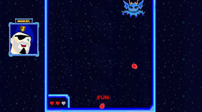
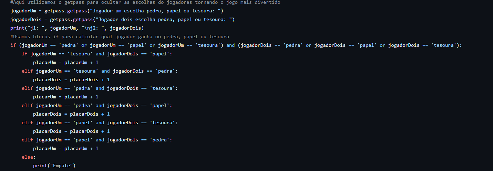
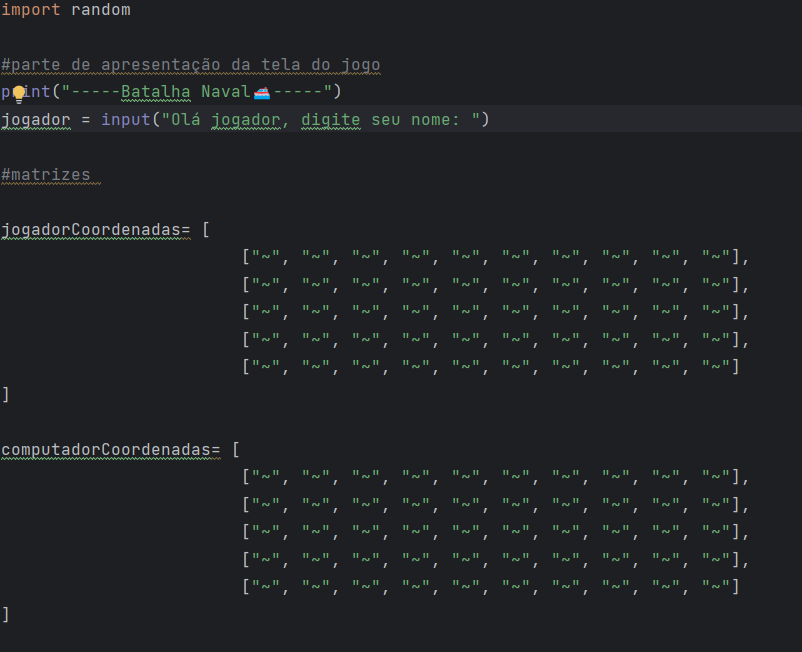
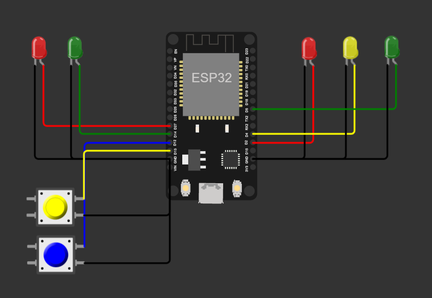
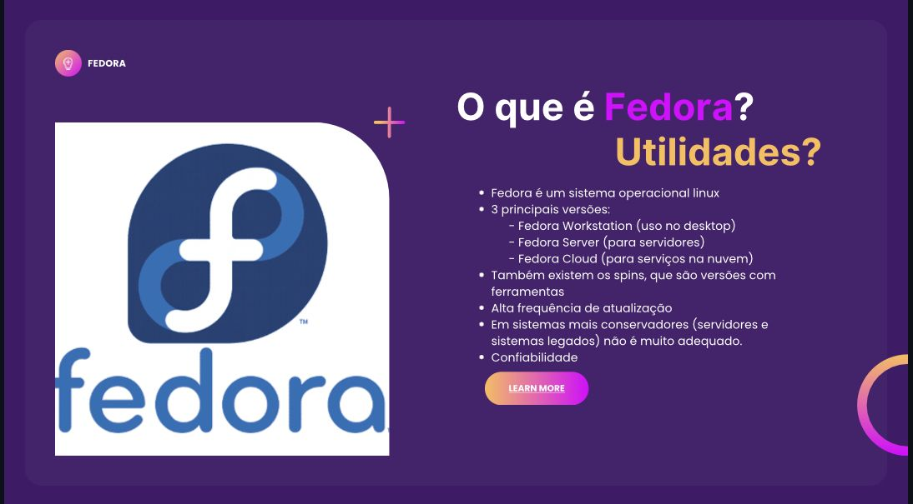

Experiência Criativa
A matéria de Experiência criativa é moldada para que os alunos possam
desenvolver projetos que exijam mais da criatividade durante o curso.
LYRIC DEFENDER

Desenvolver um jogo foi o primeiro projeto da matéria, para isso usamos a plataforma Construct! Nela eu e meu grupo desenvolvemos o jogo Lyric Defender.
O objetivo do jogo é que o jogador consiga desviar dos obstáculos enquanto digita a letra da música para acertar o inimigo. O jogo contém 5 fases, ao chegar na última o jogador enfrenta o terrível e temido Boss!
APLICATIVO MULTIMÍDIA
O aplicativo multimídia foi o segundo projeto, desenvolvido em Java dentro do Processing, onde usa a programação voltada a objetos. O aplicativo multimídia escolhido pelo meu grupo foi um quizz de gatinhos!Onde a pessoa que entrasse nele pudesse responder perguntas para ver qual gatinho ela é.
SITE CURITIBA
Site Curitiba foi uma pequena atividade em que cada grupo ficou responsável por um tema. Assim desenvolvendo uma aba em html e css, no final a turma toda juntou as abas e se tornou um site.
Raciocínio Algorítmico
A matéria de Raciocínio Algorítmico ensina propriedades para que os alunos aprendam a programação básica, a linguagem ensinada é o Python.
JO-KEN-PÔ

JO-KEN-PÔ foi um trabalho de programação desenvolvido em Python. O intuíto do trabalho foi aprender mais profundamente em como usar comandos de repetição como o "While" e também condicionais como "If", "Else, "Elif.
BATALHA NAVAL

Batalha Naval, um trabalho de programação desenvolvido em Python também! Foi o último trabalho da matéria com o intuíto de aprender mais profundamente a usar For, Listas e Funções.
Fundamentos de Sistemas Ciberfísicos
A matéria de Fundamentos de Sistemas Ciberfísicos da uma introdução a parte de Hardware de um computador!
MICROPROCESSADORES

O trabalho proposto pedia que o aluno resolvesse problemas de Smart Cities! O problema escolhido foi a acessibilidade para pedestres ao atravessar a rua. Apertando o botão azul, o pedestre pode ter um tempo maior para atravessar na faixa. Apertando o botão amarelo (de deficientes) o PCD ou idoso tem um tempo maior que o normal, e o botão azul. No projeto foi utilizado o microprocessador ESP32.
FEDORA

O trabalho sobre Sistemas Operacionais pedia para que cada grupo mostrasse mais adentro sobre o tema escolhido. O tema escolhido para meu grupo foi o Fedora.